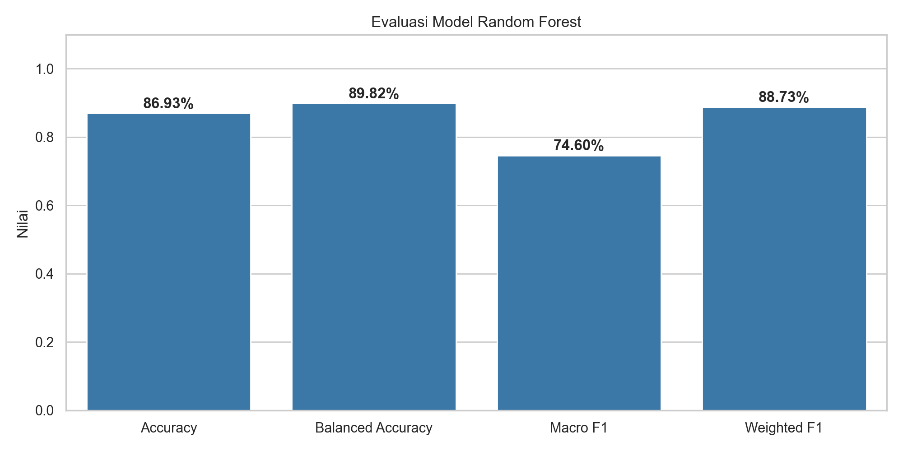
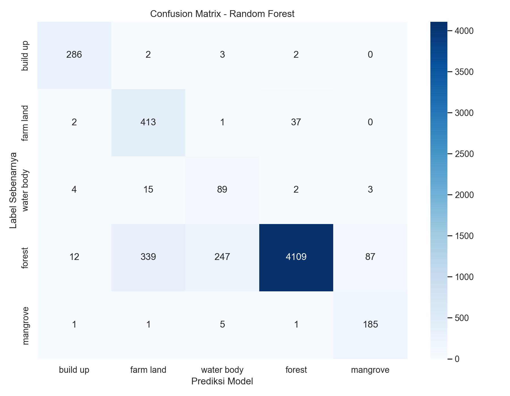
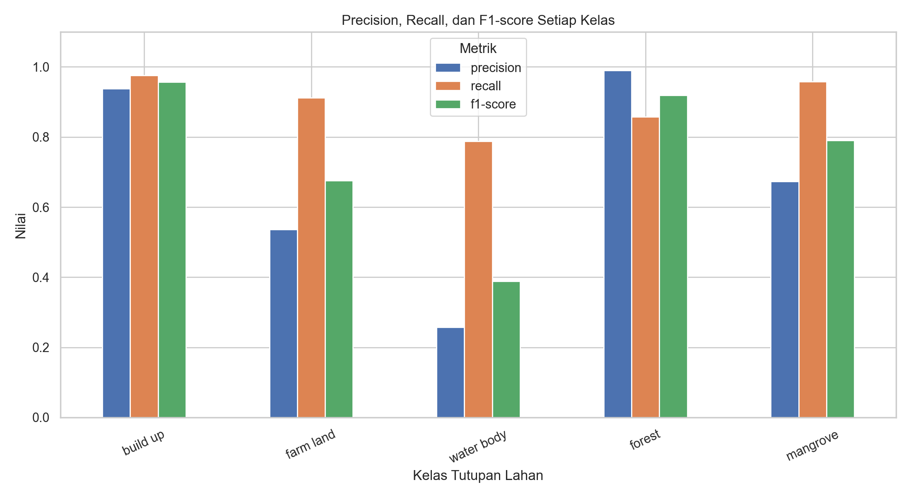
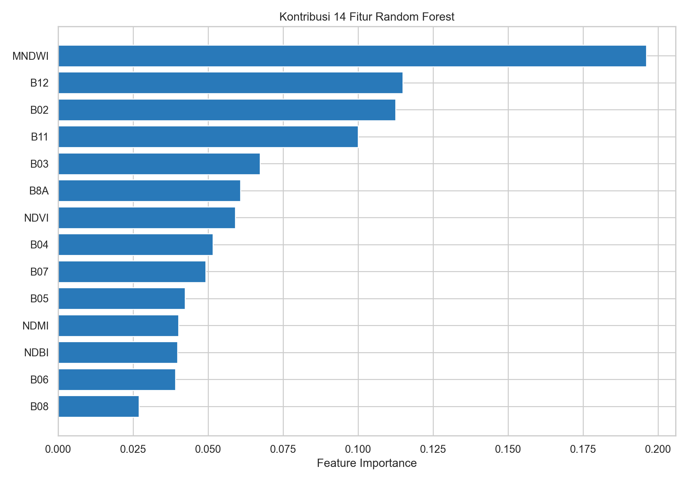
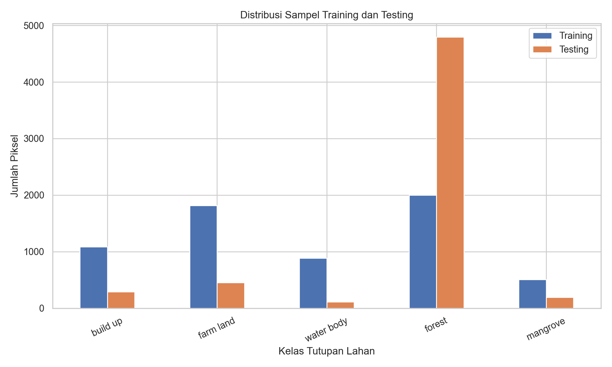
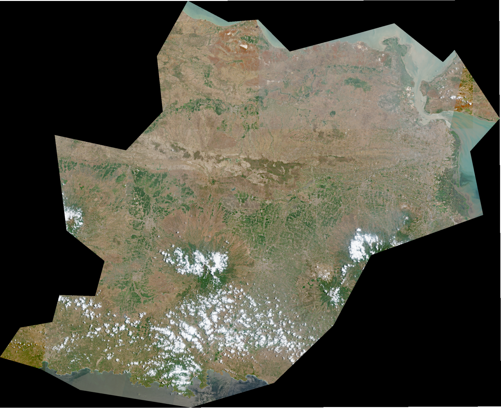

Pemetaan dan Klasifikasi Tutupan Lahan Jawa Timur Menggunakan Citra Sentinel-2 dan Random Forest#
Laporan Proyek Pengganti Ujian Tengah Semester — Pengolahan Data Spasial
Penyusun: Achmad Saiful Fuadi
Wilayah kajian: Sebagian wilayah Jawa Timur sesuai cakupan citra dan lokasi digitasi
Teknologi: Python, GeoPandas, Rasterio, Scikit-learn, Folium/Leaflet, Streamlit, dan Jupyter Book
Ringkasan Proyek#
Proyek ini membahas pemanfaatan citra satelit Sentinel-2 untuk mengenali karakteristik tutupan lahan di sebagian wilayah Jawa Timur. Lima kategori yang digunakan adalah Built-up (kawasan terbangun), Farmland (lahan pertanian), Water Body (badan air), Forest (hutan non-mangrove), dan Mangrove (hutan mangrove). Lokasi sampel ditentukan melalui digitasi poligon dan disimpan dalam format GeoJSON. Nilai spektral yang berada di dalam poligon kemudian diekstraksi dan dipelajari menggunakan algoritma Random Forest.
Proyek ini mencakup pengambilan dan pemeriksaan data, persiapan fitur spektral, pembagian data latih dan uji, pelatihan model, evaluasi prediksi, serta visualisasi spasial. Peta interaktif menggunakan citra Sentinel-2 True Color sebagai latar dan menyediakan pengaturan untuk menampilkan atau menyembunyikan kelas GeoJSON secara terpisah.
Indikator utama |
Hasil proyek |
|---|---|
Poligon GeoJSON hasil digitasi |
302 |
Kelas tutupan lahan |
5 |
Poligon yang menghasilkan piksel valid |
299 |
Sampel piksel valid |
55.008 |
Fitur untuk klasifikasi |
14 |
Poligon latih / uji |
239 / 60 |
Piksel latih setelah penyeimbangan |
6.295 |
Piksel uji |
5.846 |
Accuracy Random Forest |
86,93% |
Balanced accuracy |
89,82% |
Catatan metodologis: Peta GeoJSON menampilkan label hasil digitasi manual, sedangkan persentase akurasi diperoleh dari prediksi Random Forest terhadap sampel piksel pengujian. Peta digitasi tidak boleh disebut sebagai peta prediksi otomatis Random Forest.
1. Business Understanding#
1.1 Latar Belakang#
Tutupan lahan menggambarkan objek atau kondisi fisik yang menutupi permukaan bumi, misalnya bangunan, vegetasi, perairan, dan lahan pertanian. Informasi ini dapat membantu memahami karakteristik suatu wilayah, mengamati sebaran penggunaan ruang, serta memberikan dasar bagi analisis lingkungan. Di Jawa Timur, keragaman tutupan lahan dapat ditemukan pada wilayah perkotaan, area pertanian, kawasan hutan, dan ekosistem pesisir.
Pengamatan lapangan untuk wilayah yang luas membutuhkan waktu dan sumber daya. Penginderaan jauh menyediakan pendekatan lain melalui citra satelit yang merekam respons permukaan bumi pada beberapa panjang gelombang. Citra Sentinel-2 Level-2A menyediakan data spektral yang dapat digunakan untuk membedakan objek-objek di permukaan bumi. Namun, perbedaan jenis tutupan lahan tidak selalu dapat ditentukan hanya dengan melihat warna citra True Color. Beberapa kelas, seperti hutan daratan dan mangrove, sama-sama memiliki vegetasi sehingga membutuhkan analisis spektral serta konteks lokasi.
Oleh karena itu, proyek ini menggabungkan digitasi manual sebagai sumber sampel berlabel, pengolahan band Sentinel-2 sebagai sumber fitur, dan Random Forest sebagai algoritma klasifikasi. Hasilnya tidak hanya diukur melalui nilai akurasi, tetapi juga divisualisasikan dalam peta interaktif agar informasi kelas tutupan lahan lebih mudah dipahami.
1.2 Permasalahan yang Ingin Diselesaikan#
Permasalahan utama adalah bagaimana memanfaatkan data citra satelit dan poligon berlabel untuk membedakan lima kelas tutupan lahan di wilayah kajian. Selain itu, diperlukan cara untuk mengevaluasi apakah model mampu mengenali kelas-kelas tersebut pada sampel yang tidak digunakan saat pelatihan. Dari sisi penyajian, hasil digitasi perlu ditampilkan dalam peta yang memungkinkan pengguna memilih jenis tutupan lahan tertentu tanpa menampilkan semua kelas secara bersamaan.
1.3 Tujuan Proyek#
Tujuan utamanya adalah mengidentifikasi karakteristik spektral lima kelas tutupan lahan di wilayah kajian Jawa Timur menggunakan Sentinel-2 dan Random Forest serta menyajikan lokasi sampel digitasi dalam peta interaktif berbasis Leaflet.
Tujuan khususnya meliputi pembuatan dataset GeoJSON berlabel; pemeriksaan sepuluh band Sentinel-2; perhitungan indeks NDVI, NDMI, MNDWI, dan NDBI; ekstraksi sampel piksel; pelatihan dan pengujian Random Forest dengan pemisahan berdasarkan poligon; penyajian metrik evaluasi; dan pembuatan peta interaktif dengan filter setiap kelas.
1.4 Manfaat dan Batasan#
Proyek ini menunjukkan alur kerja pengolahan data geospasial dari data mentah hingga informasi visual. Manfaat utamanya adalah sebagai media demonstrasi analisis tutupan lahan berbasis penginderaan jauh dan machine learning. Hasil yang tersedia dapat menjadi dasar pembelajaran dan pengembangan analisis spasial berikutnya.
Penelitian ini tidak mengklaim telah memetakan seluruh Provinsi Jawa Timur. Cakupan analisis dibatasi oleh citra yang digunakan dan lokasi poligon digitasi. Akurasi yang dilaporkan adalah kinerja model pada sampel piksel testing, bukan pengukuran langsung ketepatan setiap lokasi di seluruh wilayah.
2. Data Understanding#
2.1 Sumber dan Karakteristik Data#
Data citra diperoleh dari Copernicus Browser berupa Sentinel-2 Level-2A, dengan tanggal pengambilan citra yang digunakan pada proyek ini 1 Oktober 2026. Berkas raster yang diproses memiliki sistem koordinat EPSG:32749 (WGS 84 / UTM zona 49S), dimensi 2.500 × 2.055 piksel, dan resolusi TIFF hasil ekspor sekitar 93,44 meter per piksel. Nilai ini adalah resolusi berkas yang digunakan dalam eksperimen, bukan pernyataan bahwa seluruh band Sentinel-2 pada produk asal mempunyai resolusi tersebut.
Selain raster band, digunakan satu berkas True Color TIFF dengan tiga kanal untuk latar peta. Sementara itu, berkas GeoJSON memuat geometri poligon serta atribut class sebagai label referensi tutupan lahan. Koordinat GeoJSON awal menggunakan EPSG:4326, lalu ditransformasikan agar sesuai dengan raster saat ekstraksi piksel.
2.2 Definisi Operasional Kelas#
Kelas |
Definisi operasional |
Jumlah poligon |
|---|---|---|
Built-up |
Area yang didominasi bangunan, permukiman, dan permukaan terbangun |
72 |
Farmland |
Lahan pertanian, termasuk sawah dan area budidaya sesuai label digitasi |
80 |
Water Body |
Sungai, danau, laut, waduk, dan perairan terbuka dalam satu kelas |
50 |
Forest |
Tutupan vegetasi hutan daratan non-mangrove |
50 |
Mangrove |
Vegetasi hutan mangrove di kawasan pesisir |
50 |
Total |
302 |
Jumlah poligon yang tidak sama antar kelas bukanlah kesalahan pembacaan data. Poligon terbaru memang mencakup tambahan sampel Built-up dan Farmland. Akan tetapi, jumlah poligon tidak identik dengan jumlah sampel piksel karena setiap poligon dapat memiliki luas berbeda.
2.3 Band Spektral yang Digunakan#
Sepuluh band Sentinel-2 yang digunakan adalah B02, B03, B04, B05, B06, B07, B08, B8A, B11, dan B12. Setiap band memberikan informasi mengenai respons objek pada bagian spektrum elektromagnetik yang berbeda.
Band |
Kelompok spektral |
Kegunaan dalam analisis |
|---|---|---|
B02 |
Blue |
Informasi respons cahaya biru |
B03 |
Green |
Informasi respons cahaya hijau |
B04 |
Red |
Respons cahaya merah, penting untuk karakteristik vegetasi |
B05–B07 |
Red Edge |
Membantu menangkap variasi respons vegetasi |
B08 |
Near Infrared |
Respons vegetasi dan perhitungan beberapa indeks |
B8A |
Narrow Near Infrared |
Informasi vegetasi pada kanal NIR yang lebih sempit |
B11 |
Shortwave Infrared |
Sensitif terhadap kondisi kelembapan objek |
B12 |
Shortwave Infrared |
Menambah informasi spektral mengenai kondisi permukaan |
Perhatian khusus: kombinasi B8A–B11–B04#
Sesuai arahan tugas, band B8A, B11, dan B04 mendapat perhatian untuk membandingkan karakteristik Forest dan Mangrove. B8A berkaitan dengan pantulan inframerah dekat oleh vegetasi, B11 peka terhadap variasi kelembapan, sedangkan B04 memberikan respons pada kanal merah. Kombinasi ketiga band dapat dipakai sebagai komposit false color untuk membantu interpretasi vegetasi dan perbedaan lingkungan.
Dalam eksperimen yang dilaporkan, ketiga band tersebut digunakan sebagai bagian dari 14 fitur Random Forest. Peta dasar yang disajikan pada bagian akhir tetap menggunakan True Color, bukan komposit B8A–B11–B04. Jadi, jangan menuliskan bahwa tampilan false color sudah dibuat jika belum ada hasil visualisasinya.
2.4 Mengapa Menambahkan Indeks Spektral?#
Selain band mentah, empat indeks spektral dihitung untuk merangkum hubungan antara beberapa kanal. Indeks tidak menggantikan band, tetapi melengkapi informasi masukan model:
Indeks |
Bentuk perhitungan |
Interpretasi umum |
|---|---|---|
NDVI |
|
Kehijauan dan aktivitas vegetasi |
NDMI |
|
Karakteristik kelembapan vegetasi |
MNDWI |
|
Membantu membedakan perairan dari objek lain |
NDBI |
|
Membantu mengamati permukaan terbangun |
Nilai indeks tidak otomatis menjadi label kelas. Misalnya, nilai NDVI tinggi mengindikasikan respons vegetasi, tetapi belum cukup untuk memastikan objek tersebut adalah hutan daratan atau mangrove. Karena itulah beberapa band dan indeks digunakan secara bersamaan dalam model.
3. Data Preparation#
3.1 Pemeriksaan Konsistensi Raster#
Tahap pertama memastikan bahwa sepuluh band mempunyai CRS, dimensi, serta transformasi spasial yang sama. Hasil pemeriksaan menunjukkan sepuluh band yang digunakan sudah berada pada grid yang sesuai, sehingga nilai piksel pada lokasi baris dan kolom yang sama dapat digabungkan sebagai satu pengamatan. Pemeriksaan ini penting karena pergeseran raster akan menyebabkan nilai spektral sebuah objek diambil dari lokasi yang keliru.
3.2 Pemeriksaan dan Penyesuaian GeoJSON#
File GeoJSON diperiksa untuk mengetahui jumlah poligon, jenis label, dan kualitas geometri. Hasilnya terdapat 302 poligon, lima kategori label, tidak ada geometri kosong, dan tidak ada geometri tidak valid yang terdeteksi. Koordinat poligon ditransformasikan dari EPSG:4326 ke EPSG:32749 agar selaras dengan raster.
Setiap poligon diberikan polygon_id unik. ID ini penting tidak hanya untuk proses pengambilan piksel, tetapi juga untuk memastikan seluruh sampel dari satu poligon masuk ke kelompok latih atau kelompok uji saja.
3.3 Ekstraksi Nilai Piksel#
Poligon diubah sementara menjadi raster ID untuk mencari piksel yang berada di dalam area digitasi. Nilai dari sepuluh band kemudian diambil pada piksel-piksel tersebut. Dari proses rasterisasi ditemukan 55.053 posisi piksel di dalam poligon. Setelah pemeriksaan nilai spektral yang tidak valid, tersisa 55.008 sampel piksel valid. Empat indeks tambahan selanjutnya dihitung, sehingga satu sampel memuat 14 fitur, satu label kelas, dan satu ID poligon.
Jumlah piksel valid per kelas adalah:
Kelas |
Sampel piksel valid |
|---|---|
Forest |
49.661 |
Farmland |
2.271 |
Built-up |
1.379 |
Water Body |
998 |
Mangrove |
699 |
Total |
55.008 |
Kelas Forest mendominasi jumlah piksel karena luas poligon dan piksel yang dicakup jauh lebih besar dibanding kelas lainnya. Dengan demikian, banyaknya piksel bukan ukuran jumlah poligon. Sebanyak tiga poligon tidak menghasilkan piksel valid, yaitu poligon ID 4 (Water Body), 77 (Mangrove), dan 85 (Mangrove); ketiganya tidak diikutkan dalam proses pemisahan data.
3.4 Pemeriksaan Nilai dan Keterbatasan Mask#
Filter yang diterapkan memeriksa nilai yang tidak tersedia, tidak terhingga, atau tidak memenuhi batas validitas numerik. Namun, pemeriksaan tersebut belum merupakan masker awan yang khusus. Sejumlah awan masih terlihat pada citra True Color dan dapat memengaruhi interpretasi nilai spektral. Hal ini dicatat sebagai keterbatasan proyek.
3.5 Pembagian Training dan Testing Berdasarkan Poligon#
Dari 299 poligon aktif, data dipisahkan sekitar 80% untuk training dan 20% untuk testing dengan mempertahankan proporsi label pada tingkat poligon:
Kelompok |
Poligon |
Sampel piksel sebelum penyeimbangan |
|---|---|---|
Training |
239 |
49.162 |
Testing |
60 |
5.846 |
Total |
299 |
55.008 |
Jumlah piksel tidak terbagi tepat 80:20 karena luas poligon berbeda. Pemisahan berdasarkan poligon membantu mencegah kebocoran data spasial sederhana, yakni sampel dari poligon yang sama muncul pada pelatihan sekaligus pengujian. Pemeriksaan program menunjukkan tidak ada ID poligon yang muncul pada kedua kelompok. Walaupun demikian, kedekatan spasial antarkawasan tetap dapat memengaruhi kemiripan data, sehingga skor pengujian belum tentu sama dengan kinerja pada wilayah yang benar-benar baru.
4. Modeling — Random Forest#
4.1 Alasan Pemilihan Algoritma#
Random Forest merupakan metode klasifikasi ensemble yang menggabungkan prediksi sejumlah pohon keputusan. Setiap pohon mempelajari pemisahan kelas berdasarkan nilai fitur, lalu hasil dari seluruh pohon digabungkan untuk menentukan kelas akhir. Metode ini dipilih karena dapat mengolah banyak fitur spektral dan mempelajari hubungan nonlinier antara respons citra dengan kategori tutupan lahan.
Input model berupa 14 fitur: B02, B03, B04, B05, B06, B07, B08, B8A, B11, B12, NDVI, NDMI, MNDWI, dan NDBI. Targetnya adalah salah satu dari lima label hasil digitasi.
4.2 Mengatasi Ketidakseimbangan Sampel#
Data awal sangat didominasi piksel Forest. Jika seluruh piksel pelatihan langsung digunakan tanpa pengendalian, model dapat lebih sering mempelajari karakteristik kelas yang paling banyak diwakili. Untuk mengurangi dominasi tersebut, kode melakukan pengambilan acak maksimal 2.000 piksel per kelas dari data training. Kelas yang memiliki lebih sedikit sampel tetap menggunakan seluruh sampelnya. Setelah tahap ini, diperoleh 6.295 piksel training.
Strategi tersebut tidak mengubah sampel testing. Artinya, penilaian model tetap dilakukan pada 5.846 piksel pengujian sesuai distribusi data yang tersedia. Pembatasan sampel adalah pilihan eksperimen untuk meningkatkan perhatian model terhadap kelas minoritas, bukan jaminan meningkatkan seluruh metrik.
4.3 Parameter Model#
Parameter |
Konfigurasi |
|---|---|
Algoritma |
|
Jumlah pohon ( |
200 |
|
|
|
1 |
|
42 |
|
|
|
-1 |
Jumlah fitur |
14 |
Penggunaan random_state=42 membantu membuat pengambilan sampel dan pelatihan dapat diulang dalam kondisi kode serta data yang sama. Model yang sudah dilatih disimpan sebagai berkas .joblib agar hasilnya dapat digunakan kembali tanpa melatih ulang setiap kali website dijalankan.
4.4 Alur Pemodelan#
Citra Sentinel-2 + GeoJSON berlabel → ekstraksi 14 fitur → pemisahan poligon latih/uji → penyeimbangan sampel latih → Random Forest → prediksi piksel uji → evaluasi model.
Alur ini menunjukkan bahwa GeoJSON bukan sekadar lapisan warna pada peta, tetapi juga menjadi sumber label referensi untuk melatih dan menguji model. Akan tetapi, warna poligon pada peta utama tetap berasal dari label digitasi yang dimasukkan sebelumnya.
5. Evaluation — Analisis Hasil Klasifikasi#
5.1 Ringkasan Hasil Pengujian#
Evaluasi dilakukan dengan membandingkan prediksi Random Forest dan label acuan pada 5.846 piksel testing. Hasil eksperimen adalah sebagai berikut:
Metrik |
Nilai |
Makna |
|---|---|---|
Accuracy |
86,93% |
Proporsi seluruh piksel uji yang diprediksi benar |
Balanced accuracy |
89,82% |
Rata-rata recall setiap kelas |
Macro F1-score |
74,60% |
Rata-rata F1-score lima kelas tanpa pembobotan jumlah sampel |
Weighted F1-score |
88,73% |
Rata-rata F1-score yang memperhitungkan banyaknya sampel kelas |
Accuracy sebesar 86,93% memperlihatkan bahwa sebagian besar piksel testing diprediksi sesuai labelnya. Balanced accuracy sebesar 89,82% menunjukkan rata-rata kemampuan pengenalan masing-masing kelas berdasarkan recall cukup tinggi. Namun, Macro F1-score hanya 74,60%, sehingga terdapat ketidakseimbangan antara precision dan recall pada sebagian kelas. Karena itu, keberhasilan model tidak cukup disimpulkan hanya dari accuracy keseluruhan.
5.2 Perbandingan Metrik Evaluasi#

Grafik tersebut menunjukkan bahwa setiap metrik memberikan sudut pandang berbeda. Accuracy lebih menekankan proporsi prediksi benar secara keseluruhan; balanced accuracy membantu mengamati kemampuan pengenalan kelas dengan jumlah data berbeda; sedangkan F1-score mempertimbangkan ketepatan prediksi positif (precision) dan kelengkapan pengenalan sampel kelas (recall).
5.3 Confusion Matrix#

Confusion matrix membandingkan label sebenarnya pada baris dengan label yang diprediksi model pada kolom. Angka pada diagonal utama menunjukkan piksel yang diprediksi benar. Angka di luar diagonal menunjukkan piksel yang tertukar dengan kelas lain. Dengan melihat matriks ini, kita dapat mengetahui pasangan kelas yang masih sering keliru dibedakan oleh model.
Perbedaan respons spektral antarobjek tidak selalu tegas. Contohnya, lahan pertanian dengan vegetasi rapat dapat memiliki kemiripan dengan vegetasi alami. Sebaliknya, piksel berukuran besar dapat berisi campuran beberapa jenis tutupan lahan. Hal-hal ini merupakan kemungkinan penyebab kebingungan kelas yang perlu diuji lebih lanjut melalui matriks dan kondisi citra, bukan langsung dianggap sebagai penyebab pasti.
5.4 Precision, Recall, dan F1-score per Kelas#

Precision menjawab: dari seluruh piksel yang diprediksi sebagai suatu kelas, berapa banyak yang benar?
Recall menjawab: dari seluruh piksel yang sebenarnya termasuk suatu kelas, berapa banyak yang berhasil dikenali?
F1-score merangkum keseimbangan antara precision dan recall.
Grafik performa per kelas membantu mengidentifikasi kategori yang perlu penambahan sampel, perbaikan digitasi, atau penyesuaian pemodelan. Jika suatu kelas mempunyai recall tinggi tetapi precision rendah, berarti banyak sampel kelas tersebut ditemukan, tetapi sejumlah piksel dari kelas lain ikut diprediksi sebagai kelas itu. Jika precision tinggi namun recall rendah, prediksi terhadap kelas itu relatif tepat saat diberikan, tetapi banyak sampel aslinya terlewat.
5.5 Feature Importance#

Feature importance menunjukkan besar kontribusi relatif fitur terhadap proses pembentukan keputusan dalam Random Forest yang telah dilatih. Grafik ini mencakup sepuluh band dan empat indeks spektral. Fitur yang lebih tinggi pada grafik digunakan lebih besar dalam keputusan pohon menurut ukuran importance pada model.
Karena tugas menyoroti B8A, B11, dan B04, posisi ketiga band tersebut perlu diperhatikan ketika menjelaskan kaitannya dengan hutan dan mangrove. Meski demikian, importance pada model secara keseluruhan tidak langsung membuktikan suatu band khusus membedakan Forest dari Mangrove. Analisis khusus antar-dua kelas memerlukan pengujian tambahan.
5.6 Distribusi Sampel#

Grafik distribusi memperlihatkan jumlah piksel dari setiap kategori pada data yang dipakai model. Perbedaan banyaknya sampel disebabkan luas poligon, jumlah piksel valid, serta strategi pembatasan data training. Hal ini menjadi alasan penggunaan sejumlah metrik evaluasi yang tidak hanya bergantung pada banyaknya sampel kelas terbesar.
5.7 Interpretasi Keseluruhan#
Hasil eksperimen menunjukkan Random Forest telah berhasil dilatih dan diuji menggunakan fitur yang diekstraksi dari lokasi GeoJSON. Nilai akurasi 86,93% merupakan hasil nyata pada pengujian ini. Akan tetapi, macro F1-score yang lebih rendah dan kondisi dataset yang tidak seimbang menunjukkan adanya ruang perbaikan. Hasil penelitian sebaiknya dijelaskan sebagai kinerja model pada sampel uji yang tersedia, bukan sebagai jaminan akurasi pemetaan seluruh Jawa Timur.
6. Visualization — Peta Interaktif Tutupan Lahan#
Citra Satelit Sentinel-2 True Color#

Citra ini digunakan sebagai latar untuk melihat kondisi permukaan wilayah kajian di Jawa Timur.
6.1 Tujuan Visualisasi#
Tahap visualisasi menyajikan data spasial dalam bentuk yang lebih mudah ditelusuri. Pengguna tidak perlu membuka berkas GeoJSON dan TIFF secara manual untuk mengetahui lokasi sampel. Citra Sentinel-2 True Color digunakan sebagai peta dasar, sedangkan 302 poligon GeoJSON ditampilkan sebagai lapisan di atas citra. Setiap kelas diberi warna berbeda agar mudah dikenali.
Kelas |
Warna layer |
|---|---|
Built-up |
Abu-abu |
Farmland |
Kuning |
Water Body |
Biru |
Forest |
Hijau |
Mangrove |
Toska |
6.2 Mekanisme Filter Layer#
Peta dibuat menggunakan Folium yang menghasilkan tampilan berbasis Leaflet. Lima kategori dibuat sebagai layer terpisah. Pengguna dapat mencentang atau menghapus centang setiap kelas pada panel di sudut kanan atas. Sebagai contoh, ketika hanya Farmland yang diaktifkan, poligon berwarna kuning tetap terlihat, sedangkan poligon dari empat kelas lain disembunyikan. Pengguna juga dapat mengaktifkan beberapa kelas sekaligus untuk membandingkan lokasinya.
6.3 Peta Interaktif Sentinel-2 dan GeoJSON#
Peta di bawah ini merupakan visualisasi hasil digitasi. Latar satelit berasal dari TIFF True Color, sedangkan poligon berasal dari GeoJSON berlabel. Area di luar cakupan citra dapat tampak gelap atau kosong karena tidak tersedia informasi gambar pada berkas raster yang digunakan.
Buka peta Leaflet dalam halaman penuh
Penting: Warna layer pada peta di atas menunjukkan label asli poligon hasil digitasi, bukan prediksi RF pada seluruh wilayah. Jika ingin membuat layer prediksi Random Forest secara eksplisit, prediksi model perlu dihubungkan ke lokasi piksel/poligon dan disajikan sebagai layer terpisah.
7. Deployment dan Penyajian Informasi#
Hasil pengolahan dikembangkan menjadi dua bentuk penyajian yang saling melengkapi:
Jupyter Book melalui GitHub Pages digunakan sebagai laporan akademik yang menyajikan penjelasan tiap tahap, tabel hasil, grafik, serta peta Leaflet interaktif. Halaman tersebut dapat dibuka melalui browser tanpa menjalankan seluruh proses pengolahan ulang. HTML peta dan PNG True Color harus diterbitkan bersama agar overlay tetap muncul.
Streamlit digunakan sebagai aplikasi web proyek yang menggabungkan menu Business Understanding, Data Understanding, Data Preparation, Random Forest, Evaluation, Peta Interaktif, dan Kesimpulan. Streamlit dijalankan melalui app.py dan dapat diterbitkan melalui layanan hosting yang mendukung aplikasi Python. Pengunggahan laporan ke GitHub Pages bukan pengganti deployment Streamlit apabila ketentuan dosen secara khusus mewajibkan aplikasi Streamlit.
Alur akhir proyek dapat diringkas sebagai ambil data → periksa dan olah data → latih serta uji model → evaluasi → sajikan informasi dalam grafik dan peta.
8. Kesimpulan#
Proyek klasifikasi tutupan lahan di sebagian wilayah Jawa Timur berhasil menggabungkan citra satelit Sentinel-2 dan dataset digitasi GeoJSON. Terdapat 302 poligon yang mewakili lima kelas tutupan lahan, yaitu Built-up, Farmland, Water Body, Forest, dan Mangrove. Dari proses pengolahan, 299 poligon menghasilkan total 55.008 sampel piksel valid dengan sepuluh fitur band spektral serta empat indeks tambahan.
Training dan testing dipisahkan berdasarkan ID poligon, sehingga tidak ada poligon yang muncul pada kedua kelompok. Setelah penyeimbangan sampel training, Random Forest dilatih menggunakan 6.295 piksel, kemudian diuji pada 5.846 piksel. Model memperoleh accuracy 86,93%, balanced accuracy 89,82%, macro F1-score 74,60%, dan weighted F1-score 88,73%. Perbedaan antarmetrik mengingatkan bahwa kualitas prediksi setiap kelas harus diperiksa, tidak hanya akurasi keseluruhan.
Selain klasifikasi, dibuat peta interaktif yang menampilkan citra True Color dengan 302 poligon GeoJSON dan filter checkbox untuk kelima kelas. Peta ini memenuhi kebutuhan visualisasi hasil digitasi dan mempermudah penelusuran lokasi sampel tutupan lahan. Hasil klasifikasi Random Forest dijelaskan secara terpisah melalui metrik dan grafik pengujian.
Keterbatasan dan Saran Pengembangan#
Keterbatasan utama mencakup resolusi TIFF ekspor sekitar 93,44 meter/piksel, keberadaan awan, ukuran poligon yang tidak selalu menghasilkan piksel valid, serta ketidakseimbangan jumlah sampel antar kelas. Selain itu, penilaian pada piksel dari poligon yang berbeda belum sepenuhnya menguji kemampuan generalisasi pada wilayah geografis yang jauh.
Pengembangan dapat diarahkan pada penggunaan citra dengan resolusi lebih tinggi, penyaringan awan berbasis informasi kualitas citra, penambahan dan perbaikan sampel kelas yang sulit dikenali, pembandingan model, serta pembuatan layer prediksi RF terpisah agar perbedaan antara label digitasi dan hasil klasifikasi otomatis dapat dilihat secara langsung.
Sumber data dan hasil: Citra Sentinel-2 Level-2A dari Copernicus Browser; GeoJSON hasil digitasi; laporan preprocessing, Random Forest, dan evaluasi yang dihasilkan melalui proyek Python pengguna. Seluruh gambar evaluasi pada halaman ini merujuk pada file hasil eksperimen di direktori uts_assets.